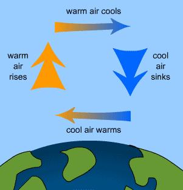
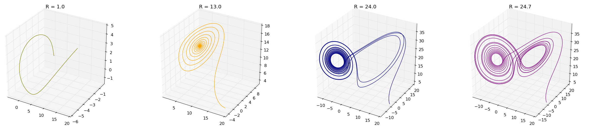

Un peu de météorologie
Un système très familier considéré comme chaotique est la météo. C'est grâce à la mécanique chaotique que nous pouvons avoir des bulletins météo tous les soirs nous permettant de savoir comment nous habiller le lendemain. Cependant, ce fût un chemin très long pour arriver à prédire le temps et même encore aujourd'hui, nous ne sommes pas encore sûrs à 100% du temps que nous aurons demain. Dans cette partie, nous allons essayer de percer les mystères qui entourent les mouvements atmosphériques et les méthodes mises en place pour essayer de prédire ces changements.
Pour commencer, il est important de savoir comment bougent les masses d'air dans l'atmosphère. En fait c'est très simple, le moteur de cette remarquable mécanique est principalement le Soleil! Et oui, certains rayons lumineux vont traverser l'atmosphère et arriver au sol lui transmettant toute l'énergie qu'ils transportent. Le sol va lui chauffer et transmettre cette chaleur à l'air. Nous avons donc un air qui se réchauffe au niveau du sol et un air plus froid dans les hautes couches de l'atmosphère. En regardant les propriétés physiques de l'air, nous pouvons voir que lorsqu'un volume donné d'air se réchauffe, sa densité diminue. Cela va donc former un mouvement, l'air plus chaud va avoir tendance à monter vers les hautes couches de l'atmosphère et l'air plus froid va avoir tendance à migrer vers le sol. Nous avons donc création de cellules de convections.

Quel rapport avec la météo? Et bien c'est très simple, lorsque les masses d'air se déplacent elles emmènent avec elle leurs propriétés. Donc si une parcelle d'air contient une forte concentration d'eau, elle l'emmène avec elle. Nous avons ici le moteur du déplacement des nuages. Le déplacement de ces masses d'air affecte également les écarts de pression qui se dessinent et que vous voyez sur les cartes météo à la télévision.
Le problème avec la prédiction météorologique est l'interdépendance de tous les paramètres de l'atmosphère. Pour prendre un exemple, lorsque vous avez une zone de dépression, il y a un déplacement d'une masse d'air voisine. C'est ici une réaction thermodynamique, l'atmosphère s'organise pour que son enthalpie soit minimum alors qu'en même temps, le sol continue à chauffer l'air créant de nouveau un déséquilibre. De même, l'ensoleillement n'étant pas constant à la surface de la Terre (dépendant de la situation géographique et des saisons), nous avons donc formation de diverses cellules de convections qui se retrouvent interdépendantes. Une perturbation sur l'une de ces cellules peut être retrouvée sous la forme d'une autre perturbation sur une autre cellule de convection. C'est ici l'idée qui s'est dégagée de la remarque de Lorenz: "Le battement d'ailes d'un papillon au Brésil peut-il provoquer une tornade au Texas?"
Lorsque Lorenz a découvert cette théorie, il étudiait la météorologie au MIT. Comme nous l'avons dit, il fut l'un des premiers a avoir pu utiliser un ordinateur! Bien sûr, ce n'était pas du tout les mêmes machines que nous utilisons aujourd'hui! Ces derniers occupaient une salle entière, chauffaient comme un diable et avaient une capacité de calcul inférieure aux premiers smartphones commercialisés. Il fallait donc être très patient lorsque vous vouliez faire une modélisation et chaque erreur faisait perdre du temps à vos collègues (car à cette époque, il n'y avait que quelques ordinateurs au MIT) et gaspillait énormément d'énergie.
C'est pour cela que Lorenz a commencé à réfléchir à son problème comme tout mathématicien. Il partit des équations de Navier Stokes:
Ici, nous avons la première équation qui représente la conservation de masse dans le fluide. C'est à dire que si nous prenons toute l'atmosphère de notre planète, cette masse ne va pas changer. La deuxième équation représente le bilan de la quantité de mouvement du fluide. Ce dernier découle directement de la mécanique de Newton. Enfin, la dernière équation représente ici le bilan énergétique du fluide. Elle découle directement de l'équation de la chaleur que nous avons vue dans le chapitre précédent.
Lorenz avait pour but de comprendre le mécanisme derrière le déplacement des masses d'air plutôt que de prévoir précisément le temps. Il a donc réduit son problème au maximum. Au lieu de considérer l'atmosphère en sa totalité, il s'est plutôt intéressé à une seule cellule de convection. Son problème était donc réduit à 2 dimensions. Ensuite, il a commencé ses calculs. Nous n'allons pas les développer ici mais pour ceux qui sont intéressés, vous pouvez les retrouver ici. Notre mathématicien a donc réduit son problème au système suivant:
Dans notre équation, nous avons donc:
Dans notre équation, nous avons donc:
- Pr: Le nombre de Prandtl, c'est un nombre sans dimension qui représente le rapport entre la viscosité cinématique et la diffusivité thermique du fluide.
- Ra: Le nombre de Rayleigh, c'est un nombre sans dimension qui représente le transfert thermique au sein d'un fluide.
- Rac: Nombre de Rayleigh critique.
- β: Paramètre réel.
L'utilisation de ces équations nous oblige à travailler dans un espace qui n'est pas forcément bien connu: L'espace des phases. En mécanique analytique, nous utilisons cet espace qui a comme avantage de permettre d'interpréter géométriquement le mouvement d'un système mécanique.C'est ici que nous allons réaliser de nouveau l'expérience de Lorenz. Pour cela, nous avons du utiliser la méthode de Runge-Kutta pour développer ce système.
Revenons au jour de la découverte de Lorenz. Selon la légende, ce fût l'envie de café frais qui fit découvrir à Lorenz l'une des plus importante loi de la mécanique du Chaos: La sensibilité aux conditions initiales. En effet, notre mathématicien passait pas mal de temps à utiliser l'ordinateur à sa disposition (un Royal McBee LGP-300) et sa méthode consistait à rentrer les paramètres de son système \eqref{sys_lorenz} avec une précision au millionième (6 chiffres après la virgule) et de vérifier ses résultats en effectuant deux fois ce calcul. L'ordinateur lui donnait alors une colonne de chiffre qui lui restait à étudier. Mais un jour pas comme un autre, une forte envie de café (probablement dù à une forte déshydratation à cause de la chaleur produite par l'ordinateur) décida Lorenz à accélérer sa manœuvre. Il entra donc ses paramètres avec une précision moindre (3 chiffres après la virgule) et partit chercher son café pendant que l'ordinateur commençait ses calculs. Et la, ce fût le choc! Vous pouvez visualiser l'observation de Lorenz sur le graphique ci-dessous:
Comme vous pouvez le voir, les deux courbes suivent une trajectoire confondue au début. Cependant, au bout de quelques instant, les deux courbes ont un profil légèrement différent et finissent par ne plus être synchronisées. C'est ici la naissance de la mécanique Chaotique. Le comportement de notre cellule de convection ne doit rien au hasard mais à une forte sensibilité aux conditions initiales. La question posée par Lorenz pour présenter ses résultats était "Est ce qu'un mouvement aussi infime que le battement d'aile d'un papillon peut amener à la formation d'un phénomène aussi important qu'un ouragan?" La réponse est "Non", évidement mais lorsque Lorenz a lancé sa simulation, une très petite différence entre les données d'entrée pouvait faire la différence entre un temps ensoleillé et une tornade dans la région où il faisait ses prédictions.
Analyse du système de Lorenz
Ici, nous avons donc les coordonnées dans l'espace des phases tridimensionnel: x, y, z et les paramètres Pr et β que nous considèrerons comme fixés respectivement à 10 et 8/3. Il nous reste donc notre paramètre de contrôle R, celui-ci est strictement positif et est proportionnel à la différence de température aux extrémités du fluide. Nous pouvons déjà voir que nous allons avoir un point d'équilibre qui se trouve à l'origine (0, 0, 0). Cependant, pour r > 1, nous allons voir apparaitre deux autres points d'équilibre:
- Le point de coordonnées :
- Le point de coordonnées :
Nous pouvons simplifier ce système avec la matrice jacobienne suivante:
Dans notre cas, Rc est proche de 24.73, c'est à dire que notre système va devenir chaotique lorsque R va dépasser cette valeur. Lorsque nous modélisons ce système dans l'espace des phases, nous avons apparition d'une structure fractale que nous appelons "Attracteur de Lorenz". C'est cette construction mathématique qui a probablement donné l'idée du papillon à Lorenz pour illustrer sa mécanique Chaotique lors de sa conférence de 1963!
Lorsque notre système n'est pas chaotique, nous avons la formation d'un seul attracteur, cependant, lorsque R dépasse la valeur Rc, notre papillon déploie ses ailes pour nous inviter dans le monde du Chaos! Nous pouvons alors voir la présence d'un deuxième attracteur venant perturber la trajectoire de notre système qui rester à naviguer entre les deux puits de gravité de ces deux attracteurs. On qualifie également cette figure "d'attracteur étrange" car les trajectoires ne se coupent pas et semblent évoluer au hasard.

Nous allons maintenant nous intéresser aux variations de z en fonction du temps. Nous pouvons voir que cette variation n'est pas constante en fonction du temps. Cela est logique car nous avons pris une valeur de R=25 pour nous mettre dans le cas d'un attracteur étrange. Ici, nous allons créer ce que l'on appel la carte de notre attracteur ("Lorenz Map"). Pour cela, nous allons prendre chaque maximum ZNmax et le comparer au maximum suivant Z(N+1)max dans un graphique de la forme Z(N+1)max = f(ZNmax). Puis nous allons faire apparaitre sur ce même graphique la fonction affine Z(N+1)max = ZNmax. Bien entendu, pour avoir une bonne résolution de notre "carte", il est conseillé de faire beaucoup d'itérations.
Nous pouvons observer sur la figure \eqref{figure_evol_z} que lorsque nous sommes dans un régime non chaotique, l'allure de notre nuage de point semble reprendre l'allure de notre courbe Z(N+1)max = f(ZNmax), alors que lorsque nous sommes dans un régime chaotique, notre nuage de point donne une forme qui ne semble pas du tout chaotique! Bien au contraire, la forme que notre nuage de point nous donne peut très bien être approximé par une équation! En fait, ce travail n'est qu'un départ pour pouvoir vous montrer la création d'un diagramme de bifurcation.
Pour former un diagramme de bifurcation, c'est plutôt simple, même si nous allons devoir faire un nombre de calculs hallucinant! Dans la pratique, il faut former sur notre carte de Lorenz une sorte de toile d'araignée! Nous allons commencer à partir d'un point sur l'axe ZNmax ayant une valeur A, puis nous allons faire une droite jusqu'à ce quelle atteigne notre figure. Nous avons donc un point de coordonnées (A, B) où B est la valeur du point sur l'axe Z(N+1)max. Nous allons alors projeter ce point verticalement sur notre fonction affine ce qui vas nous donner un point de coordonnées (B, B). Puis nous allons projeter à nouveau ce point cette fois ci horizontalement sur notre figure... Vous pouvez avoir une visualisation de ce procédé sur la figure suivante.
Avec cette technique, nous pouvons alors tracer notre diagramme de bifurcation. En effet, lorsque nous avons un régime non chaotique, notre "toile" se stabilise rapidement vers une ou deux valeurs. Cependant, plus nous augmentons notre R, plus notre régime devient chaotique et notre toile ne se stabilise qu'au bout de très nombreuses incrémentations (voir ne se stabilise pas du tout). Nous pouvons voir un exemple sur la figure suivante. La difficulté de cette opération est que nous devons réaliser cette toile pour chaque valeur de R pour créer notre diagramme, mais vous pouvez observer le résultat ci-dessous.
Lorsque nous étudions ce diagramme, nous pouvons remarquer que le caractère chaotique de ce système se retrouve déjà lorsque R approche de 20. Cela peut être aperçu lorsque nous étudions les attracteurs formés. En effet, lorsque R est compris dans (20, 24), notre attracteur met du temps pour se stabiliser. Nous avons un nuage de points autour du point d'équilibre. Cependant, Nous pouvons voir que le comportement chaotique arrive au fur et à mesure. Avec ces résultats, nous pouvons dire que notre régime va être stable jusqu'au point que nous avons réussi à calculer avec nos matrices. Après, la caractéristique chaotique de notre système va rendre impossible les prévisions à long terme. C'est comme lorsque vous écoutez les prévisions de la météo, vous pouvez voir les indices de confiance qui diminuent pour les prévisions à long terme.
L'héritage de Lorenz
Aujourd'hui, les attracteurs étranges de Lorenz ont ouvert la voie à une nouvelle approche de l'étude des systèmes dynamiques. Des systèmes analogues ont été développés dans d'autres disciplines comme l'économie, l'astronomie, la chimie ou encore l'électronique.
Par exemple, nous pouvons retrouver le système de Rössler qui est très utilisé dans les modélisations d'équilibre dans les réactions chimiques. On fixera généralement α et β en utilisant γ comme paramètre de contrôle.

De nombreux modèles chaotiques ont également été proposés en économie, souvent focalisés sur la macroéconomie pour permettre de prévoir les cycles de croissance et de régression. Ici, nous allons prendre comme paramètre de contrôle δ.
C'est ici qu'on peut voir la force de cette nouvelle mécanique, elle peut être transposée dans tout les domaines et elle peut évoluer selon les besoins des différentes personnes qui l'utilise. On se sert de ces mystérieux attracteurs aussi bien pour savoir le temps qu'il fera demain que pour faire des prédictions économiques en passant par la chimie et l'électronique. Une des grandes réussites de cette mécanique a été de pouvoir apporter des réponses à des problèmes qui n'avaient aucune solution dans le domaine des mathématiques analytiques.